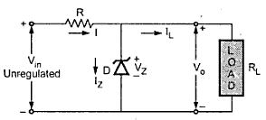
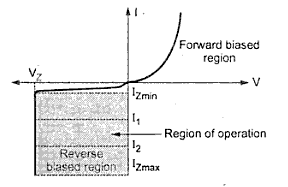
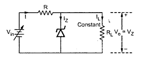
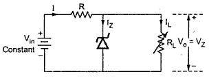

The Zener diode is a heavily doped silicon p-n junction semiconductor device , which is generally operated in its reverse breakdown region.
Circuit Symbol
HOW DOES A ZENER DIODE WORKS IN REVERSE BIAS?
A Zener diode operates just like a normal diode when it is forward-biased.
However, a small leakage current flows through the diode when connected in reverse biased mode.
As the reverse voltage increases to the predetermined breakdown voltage (Vz), current starts flowing through the diode.
The current increases to a maximum, which is determined by the series resistor, after which it stabilizes and remains constant over a wide range of applied voltage.
Applications of Zener Diode
The various applications of Zener diode are,
As a voltage regulating element in voltage regulators.
In various protection circuits.
In Zener limiters i.e. clipping circuits which are used to clip off the unwanted portion of the voltage waveform.
Voltage Regulator
A voltage regulator is a circuit that creates and maintains a fixed output voltage, irrespective of changes to the input voltage or load conditions.
Voltage regulators (VRs) keep the voltages from a power supply within a range that is compatible with the other electrical components.
Zener Diode as Voltage Regulator
The simplest shunt voltage regulator circuit uses a Zener diode, to regulate the load voltage. The below figure shows the arrangement of Zener Diode in a regulator circuit.

Zener Diode as a Shunt Regulator
To understand the working of the circuit, let us revise the V-I characteristics of a Zener Diode

V-I Characteristics Of Zener Diode
The Zener Diode is used in reverse biased region. Under reverse biased condition, the current through the diode is very small of the order of few µA, upto certain limit.
When the sufficient reverse bias is applied, electrical breakdown of the Zener Diode occurs. The large current flows through the Zener Diode. Such a breakdown occurs at a voltage called Zener Voltage VZ
Under this condition, whatever may be the current, the voltage across the Zener is constant equal to VZ.
The large current due to breakdown is limited by connecting the resistance in the circuit.
As the voltage across the Zener Diode remains constant equal to VZ, it is connected across the load and hence the Load Voltage VO is equal to the Zener Voltage VZ (VO = VZ).
Thus Zener Diode acts as an ideal voltage source which maintains a constant load voltage, independent of the current.
Types Of Regulation
Basically there are two types of regulation:
Line Regulation – Regulation with varying input voltage
Load Regulation – Regulation with varying Load.
Line Regulation
In this type of regulation, the series resistance and the load resistance are fixed, only input voltage is varying.
Output Voltage remains the same as long as the input voltage is maintained above a minimum value.

Regulation With Varying Input Voltage
Load Regulation
In this type of regulation, the input voltage is fixed, load resistance is varying.
Output Voltage remains the same as long as the load resistance is maintained above a minimum value.

Regulation With Varying Load
Applications of Voltage Regulator
Use in all power supplies to electronic gadgets to regulate voltage and save the device from damage.
Used with the alternator of internal combustion engines to regulate the alternator output.
Used for electronics circuits to supply a precise amount of voltage.